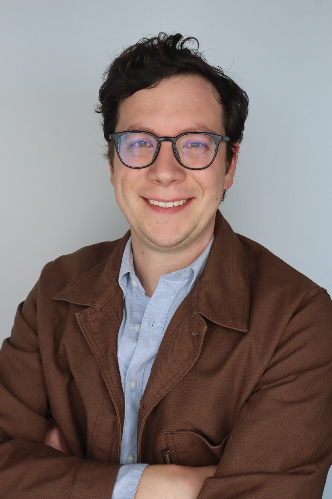
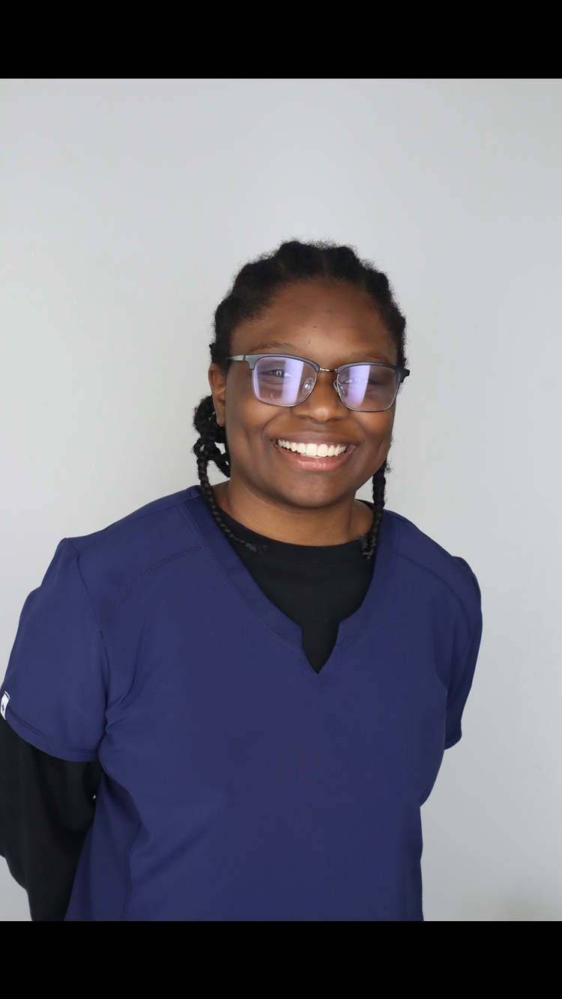
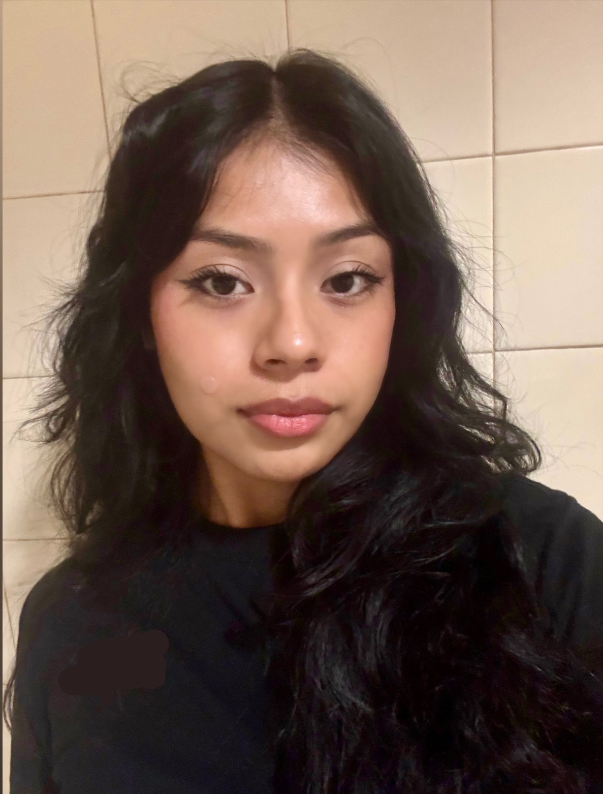
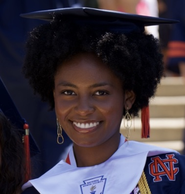
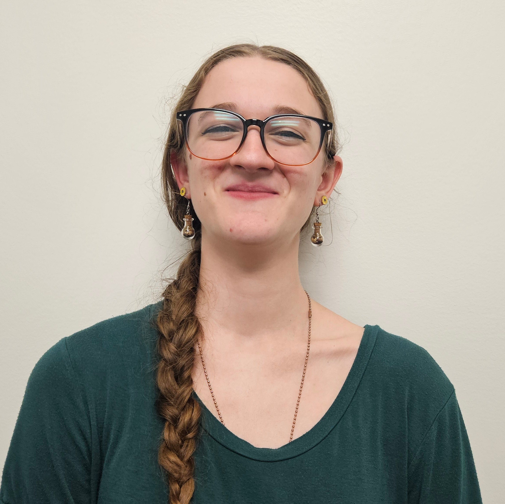
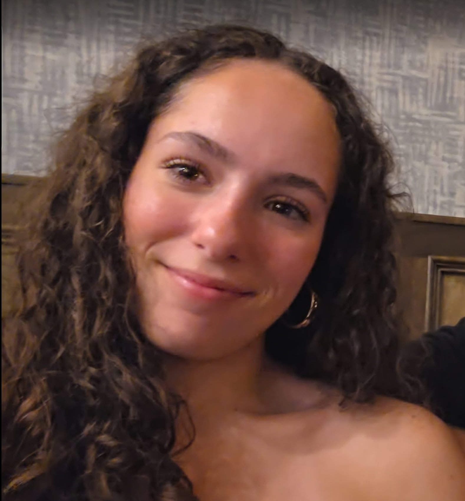

Meet the people behind the science
We are a team of curious problem-solvers working across histology, behavioral neuroscience, and physiology. We believe good science is a team sport.

Dr. Justin Varholick
Principal Investigator
Dr. Varholick (Dr. V) holds a Ph.D. in Biomedical Science/Applied Ethology from the University of Bern in Switzerland and an M.A. in Biopsychology from UNC Greensboro. He trained in regenerative biology during his postdoc under Prof. Malcolm Maden at the University of Florida, and was supported by an Early Postdoctoral grant from the Swiss National Science Foundation and an NIH Training Grant in Regenerative Medicine. His work has contributed to integrating animal behavior and phenotypic variability into basic biomedical research and establishing new model systems and frameworks to integrate animal behavior and phenotypic variability into tissue regeneration research.

Ito Osayi
Undergraduate Researcher
Ito Osayi is a 3rd year Biology and Environmental science double major with a goal of pursuing veterinary medicine. A few of her roles include being a vet mentor under the Pre Health Leadership Council, Furkids Volunteer, and biology teaching assistant. Ito has always been drawn towards biology from a young age especially regarding certain healing related topics such as animal regeneration! They're excited to investigate not only the genetic processes of different forms of regeneration but also help contribute to the overall field. In the Varholick Lab, Ito will be working on the neuroanatomy and peripheral innervation of salamanders.

Adilene Perez
Undergraduate Researcher
As a future scientist Adilene is intrigued in how the body can heal itself and how the nervous system reacts after injury. She is interested in learning how nerves heal and the cell activities that help with the recovery. At the Varholick Lab, she is getting practical experience in studying regeneration to prepare for a future career in forensic biology.

Sienna Bennett
First Year Scholar
Sienna Bennett is a first-year undergraduate student currently majoring in Biochemistry and minoring in President's Emerging Global Scholars at Kennesaw State University. During her education at North Cobb High School, she was part of a WellStar program assisting new mothers in the Mother-Baby unit. She is on a pre-medicine track to become a Cardiologist. On this project she plans to participate in discoveries about nerve regeneration in regenerative animals and build connections to nerves in different areas.

Kellyn Gilligan
Undergraduate Researcher
Kellyn Gilligan is a second year Biology major with a minor in Data Analysis and Statistics. She is working towards being a Biostatistician someday! In the Varholick Lab, she studies the neuroanatomy and peripheral innervation of salamanders. She is excited to gain hands-on experience in lab work & explore the field of regenerative biology!

Stefania Salazar
Undergraduate Researcher
Stefania Salazar is a first-year undergraduate student majoring in Biology with a human health concentration. She is working on the pre-medicine track to become a Dermatopathologist. In the Varholick Lab, she studies Schwann cells in regenerative tissue to discover the level of innervation these nerves seem to have.
Come do science with us
We are always looking for passionate and driven individuals. Every member of the lab — from first-year undergrads to graduate students — contributes meaningfully to our research.
What you'll gain
Histology & Immunohistochemistry
Hands-on tissue processing, sectioning, staining, and microscopy from day one.
Animal Behavior Quantification
Design ethograms, conduct behavioral assays, and analyze video data in live animals.
Scientific Writing & Presentations
Co-author manuscripts, present at conferences, and develop your scientific voice.
Bioinformatics Exposure
Learn data analysis, statistics, and computational approaches to biological questions.
Mentorship from Day One
Regular one-on-one meetings, career guidance, and support for graduate school or professional applications.
Collaborative Lab Culture
Work alongside peers on real research questions in a supportive, team-oriented environment.
Open Positions
We are currently looking for a graduate student to join under the "Peach State Bridges to Doctorate Program." Undergraduate positions are also available. If you are interested, please send an email with your CV and a brief statement of interest.
Apply Today